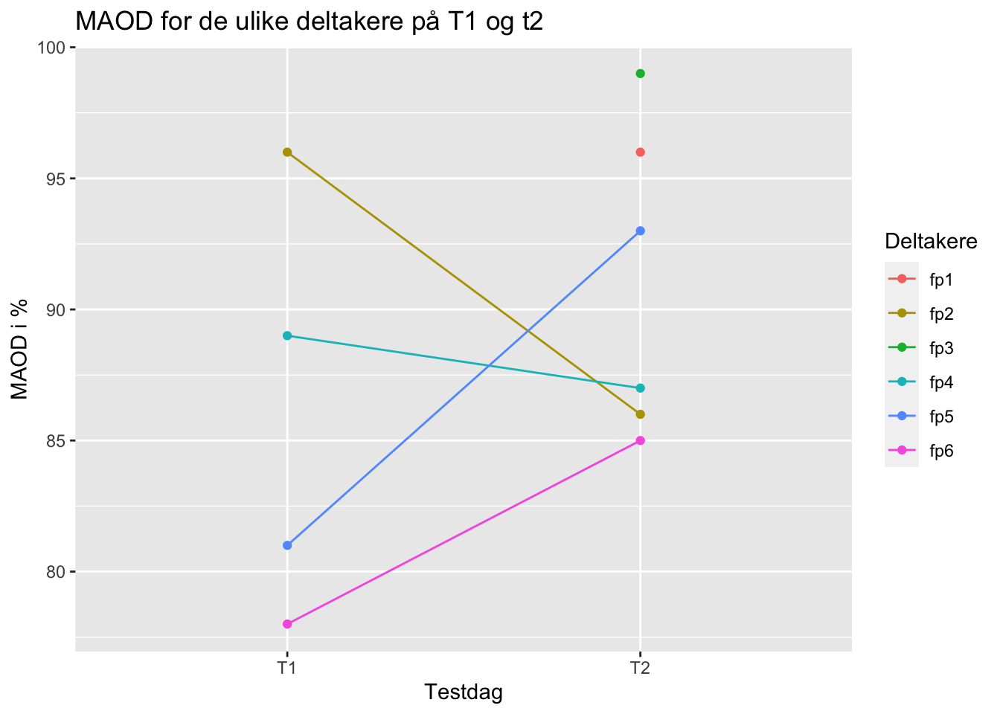

Maximal Accumulated Oxygen Deficit, heretter MAOD, er en test som måler utøverens anaerobe kapasitet (Tanner & Gore, 2013, s. 61).
Testen kan utføres med flere ulike bevegelsesformer, men vanligst er løping og sykling. Til tross for at testen regnes som det beste praktiske målet på anaerob kapasitet, er det en rekke metodiske utfordringer knyttet til testen. Det er derfor ingen universell protokoll for måling av MAOD.
Hensikten med denne oppgaven er å presentere målinger av reliabiliteten for data hentet inn på fysiologisk laboratorium. Dataen er hentet fra to ulike testdager, der blant annet MAOD-testen ble gjennomført på Lode ergometersykkel. Flere tiltak ble gjort for å sikre god reliabilitet
1.2 Metode
1.2.1 Testprosedyre forberedelser:
I forkant av testen ble ingen retningslinjer gitt til utøveren. På testdagen ble utøveren veid, og det ble følgelig gjennomført fire tester. Den første testen var en knebøy-test, der kraft/hastighet ble målt. Her ble tre repetisjoner gjennomført med maksimal innsats med henholdsvis 30%, 60% og 90% av utøverens kroppsvekt. Videre gjennomførte utøveren to submaksimale drag på sykkel. Hvert drag var på 4 minutter, der VO2-målinger ble gjort hvert 30. sekund fra 2 minutter. På de samme tidspunktene ble tråkkfrekvensen notert ned. Her ble det benyttet en wattbelastning på 100W og 150W. Etter en to minutters pause gjennomførte utøveren en VO2max.
1.2.2 Testprosedyre MAOD:
Utøveren gjennomførte MAOD-testen som siste test av fire tester. Dermed var utøveren ferdig oppvarmet til test, og det krevdes ingen ytterligere oppvarming. Hele testen gjennomføres med neseklype og munnstykke, og det måles oksygenopptak hvert 30 sekund. Før testens start informeres utøveren om at tråkkfrekvensen optimalt skal ligge på gjennomsnittlig tråkkfrekvens fra tidligere gjennomførte submaksimale drag, og utøveren kan begynne å tråkke uten motstand på sykkelen. En forhåndsbestemt wattbelastning settes i starten av en 30 sekunders måleperiode. Testen foregår til utmattelse, som antas å være når tråkkfrekvensen er < 60 RPM. Ved utmattelse stoppes tiden, og utøveren kan ta av neseklypen og munnstykket.
── Attaching core tidyverse packages ──────────────────────── tidyverse 2.0.0 ──
✔ dplyr 1.1.3 ✔ readr 2.1.4
✔ forcats 1.0.0 ✔ stringr 1.5.0
✔ ggplot2 3.4.4 ✔ tibble 3.2.1
✔ lubridate 1.9.2 ✔ tidyr 1.3.0
✔ purrr 1.0.2
── Conflicts ────────────────────────────────────────── tidyverse_conflicts() ──
✖ dplyr::filter() masks stats::filter()
✖ dplyr::lag() masks stats::lag()
ℹ Use the conflicted package (<http://conflicted.r-lib.org/>) to force all conflicts to become errors
library(dplyr)library(readxl)library(ggplot2)library(gt)datasett <-read_excel("tabell_MAOD.xlsx")#Legge inn alder i datasettetdatasett$alder <-c(25, 25, 22, 22, 23, 27)#Lage tabell som viser gruppekarakteristikken#Finne gjennomsnittet og standardavviket (i parantes)datasett %>%select(forsøksperson, kjønn, alder, vekt, høyde) %>%group_by(kjønn) %>%summarise(alderMean =mean(alder),aldersd =sprintf("(%.2f)", sd(alder)),vektMean =mean(vekt),vektsd =sprintf("(%.2f)", sd(vekt)), høydeMean =mean(høyde), høydesd =sprintf("(%.2f)", sd(høyde)),n =n()) %>%gt(caption ="Tabell 1: Gruppekarakteristikk") %>%fmt_number(decimals =0) %>%cols_label(n ="Deltakere", kjønn ="Kjønn",alderMean ="Age",aldersd ="",vektMean ="Vekt (kg)",vektsd ="", høydeMean ="Høyde (cm)", høydesd ="")
Tabell 1: Gruppekarakteristikk
Kjønn
Age
Vekt (kg)
Høyde (cm)
Deltakere
M
24
(2.00)
76
(4.90)
181
(6.09)
6
Tabell 1 viser utvalget av deltakerne, samt deres kjønn, alder, høyde og vekt.
1.3.2 Gjenomsnitt av oksygenopptak under MAOD-test
Tabell 2: Resultater MAOD i %
MAOD T1
MAOD T2
Differanse
Deltakere
85.86
(8.20)
90.92
(5.88)
5.06
6
Tallene i tabell 2 viser hvor stor prosentandel av oksygenopptaket som var dekket av anaerobe energiprosesser under MAOD-testen. Differansen viser forskjellen mellom tesdag 1 og testdag 2.
1.3.3 MAOD for de uike deltakerne på T1 og T2.
Gjennomsnittelig anaerobt arbeid for deltakerne var 89%, med et standardavvik på 6,9. Dette resulterte i en variasjonskoeffesient (cv) på 7,75.

Figuren presenterer reliabiliteten mellom T1 og T2.
1.4 Diskusjon og reliabilitet
1.4.1 Tre måter å måle reliabilitet
Med reliabilitet mener vi reproduserbarheten til en test, analyse eller annen måling i gjentatte forsøk på de samme individene (Hopkins, 2000, s.1). Hopkins (2000) viser til tre måter å måle reliabilitet på «within-subject random variation», «systematic change in the mean» og «retest correlation».
Hopkins (2000) forklarer at «within-subject variation» er den viktigste reliabilitetsmålingen. «Within-subject variation» kan ses på som tilfeldig variasjon i målinger når et enkelt individ blir testet flere ganger (Hopkins, 2000, s.2). Variasjonen i målingene hos det enkelte individet kan vises som standardavvik. Ved å dele standardavviket på kvadratroten av to finner man det Hopkins (2000) refererer til som «typical error». Det finnes flere kilder til «typical error» i en måling, som for eksempel endringer i fysisk eller mental tilstand mellom de to testene.
Endringer i gjennomsnittet kan være tilfeldige eller systematiske. «Systematic change in the mean» kan oppstå fordi testpersonene får bedre kjennskap til testen eller økt motivasjon. Systematiske endringer i gjennomsnittet kan påvirke enkelt individers resultater som igjen kan påvirke typical error (Hopkins 2000, s. 5). Hopkins (2000) foreslår å gjennomføre testen mange nok ganger før intervensjonen slik at man minimerer denne læringseffekten.
Den siste målingen for reliabilitet Hopkins (2000) presenterer er «retest correlation». Her kontrollerer man forskjellen mellom de ulike testene hos hvert enkelt individ. Dersom hvert individ har identiske målinger på test og retest har korrelasjonskoefissienten en verdi på 1, og hvis man lager en graf av de to forsøkene vil punktene danne en rett linje. Ved tilfeldig feil i målingen vil grafen vise en tilfeldig spreding av punkter og korrelasjonskoefissienten nærmer seg 0 (Hopkins, 2000, s. 6).
I denne oppgaven har vi valgt å regne ut variasjonskoeffesienten for å måle reliabiliteten på testene våre. Variasjonskoeffesienten forteller oss hvor mye tallene i dataen prosentvis viker fra gjennomsnittet og er ofte et utrykk for standardfeilen. Grunnen til at man bruker variasjonskoeffesienten er at sammenlikningen blir mere nøyaktig ettersom standardfeilen ofte øker når målingsverdiene blir større, mens prosentverdiene er ganske like (Hopkins, 2000, s.6). En større variasjonskoeffesient betyr større spredning i dataen. Dersom variasjonskoeffesienten er lav, er reliabiliteten høy.
1.4.2 Diskusjon av våre resultater
Resultatene viser at det ikke er en stor reliabilitet i dataene som ble samlet inn. Dette grunnet en høy cv-verdi på 7,75. En god cv-verdi ville vært 1, og jo høyere denne er jo mindre reliable vil testresultatene være. Dette kan skyldes feilkilder underveis i testingen. En av feilkildene som kan ha påvirket var at vi ikke fikk samlet inn data på to av forsøkspersonene under testdag 1. Dette påvirket dataene våre slik at vi ikke kunne regne ut deres MAOD-verdi på testdag 1. En annen feilkilde er at slangen skled av munnstykket under den ene testen og førte til at vi mistet viktige tall på slutten av denne testen. Vi kan tenke oss at målingene som ble tatt før slangen skled av vil være lite reliable i og med at slangen sannsynligvis har hatt en lekkasje som følge av at den ikke satt godt nok på munnstykket. Det er også mulig at forsøkspersonene har hatt et læringsutbytte fra testdag 1 til testdag 2. Dette kan ses i tabell 2 hvor forsøkspersonene har en gjennomsnittlig forbedring på 5,06%. Denne feilkilden kunne potensielt ha vært redusert ved å gjøre forsøkspersonene bedre kjent med testen før den skulle gjennomføres. De kunne for eksempel ha observert andre forsøkspersoner utføre testen først eller ha gjennomført en generalprøve selv. Fem av seks forsøkspersoner er idrettsstudenter, og det er sannsynlig at flere av disse er kjent med testene som ble utført. Det er dermed ikke sikkert at observasjon eller generalprøve ville bidratt til å dempe et eventuelt læringsutbytte. En generalprøve kunne derimot bidratt til å redusere feilkilder utført av testlederne. For tre av fire testledere var dette første gangen de utførte slike tester, og det er dermed lett å gjøre feil som påvirker testresultatene.
For å konkludere viser testresultatene lite reliable svar. Det er flere feilkilder som etter all sannsynlighet har påvirket testene, og den høye cv-verdien viser dette.